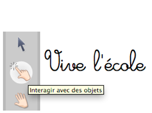
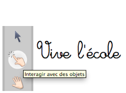
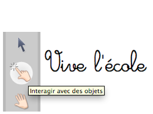

Lo strumento Interagisci con gli oggetti (dito magico) permette di spostarli senza visualizzare il loro riquadro grigio. Per le attività degli studenti, scegliere questo strumento per non sovraccaricare l'interfaccia.
Lo strumento permette anche di eseguire una serie di azioni (link ipertestuale, link su un'altra pagina, riprodurre un suono) e di agire all'interno delle applicazioni, dei widget o delle animazioni flash.
